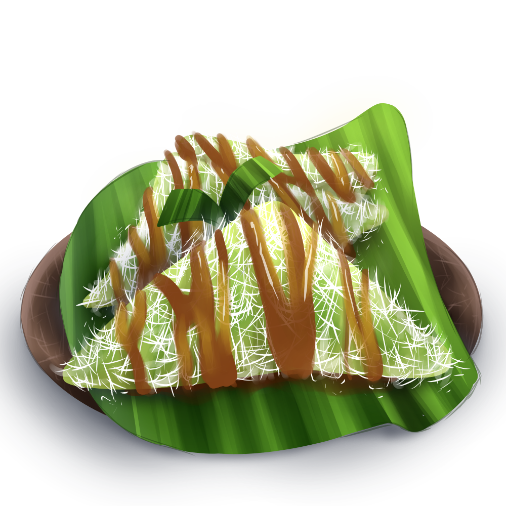
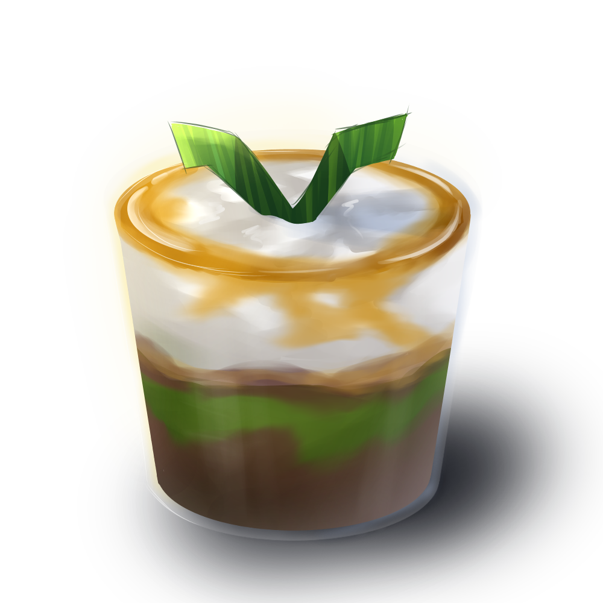

JoJorong

Kue jojorong atau jojorong adalah makanan khas suku Banten dari Kabupaten Pandeglang. Makanan ini berbahan dasar tepung beras dan santan kelapa yang bagian dalamnya diberi gula aren. Tempat atau mangkuk kuenya berbentuk persegi dan terbuat dari daun pisang yang setiap ujungnya diikat menggunakan tusuk gigi. Jojorong biasanya hanya dapat dinikmati ketika ada acara hajatan di daerah Banten, terutama Kabupaten Lebak dan Pandeglang. Pada acara sunatan atau pernikahan, jojorong menjadi sajian tuan rumah bagi para tamu yang disandingkan dengan makanan tradisional lain.
Kue Apem

Kue apem adalah makanan yang cukup legendaris di pulau Jawa. Makanan yang terbuat dari tepung kanji, tepung beras, kelapa muda serta bahan lainnya ini tidak hanya terasa lezat dan menggugah selera. Bahan utama untuk membuat apam adalah beras, gula kelapa dan ragi. Aroma kue apam dapat menjadi harum jika dikukus menggunakan takir dari daun pandan. Jenis daun pandan yang dipakai adalah yang lebar. Daun pandan lebar juga dapat diganti dengan daun pisang yang kemudian dilapisi dengan beberapa lembar daun pandan.
Kue Dongkal

Dodongkal atau dongkal adalah sejenis makanan tradisional atau kue tradisional Indonesia yang termasuk ke dalam kelompok jajanan pasar. Dongkal terbuat dari beras yang ditumbuk halus hingga menghasilkan tepung. Kemudian tepung beras yang telah halus diisikan gula aren dan dikukus. Dongkal biasanya disajikan diatas daun pisang dan ditaburi parutan kelapa diatasnya. Dongkal termasuk kedalam makanan jajanan pasar Indonesia yang mulai langka. Makanan ini bisa ditemui di Jakarta dan beberapa daerah di Jawa Barat seperti Sukabumi, Bogor, dan Cianjur. Di daerah Bandung, Dongkal dikenal dengan nama awug. Dongkal biasa disajikan bersama secangkir teh sebagai kudapan.
Gethuk

Getuk adalah panganan tradisional khas Jawa yang terbuat dari bahan utama ketela pohon atau singkong.Getuk merupakan panganan yang populer di Indonesia terutama di Jawa Tengah, Jawa Timur dan Yogyakarta. Panganan ini berasal dari Magelang, Jawa Tengah yang kemudian menyebar ke berbagai daerah di Indonesia. Pembuatan getuk diawali dengan mengupas singkong dan merebusnya. Setelah matang singkong ditumbuk atau dihaluskan dengan cara digiling lalu diberi pemanis gula dan pewarna makanan. Sebagai pelengkap, biasanya getuk di taburi dengan parutan kelapa
Kue Lupis
Lupis / Lopis merupakan salah satu makanan khas Jogja yang terbuat dari beras ketan. Beras ketan tersebut dibungkus memakai daun pisang seperti lontong, lalu direbus. Setelah matang, lupis kemudian diiris tipis-tipis mirip lontong opor. Ada juga lupis berbentuk segitiga.
Jongkong
Kue lapis jongkong merupakan makanan tradisional khas Jawa Timur yang rasanya manis. Tampilan kue ini berlapis-lapis yang setiap lapisnya memiliki dua warna berbeda, yaitu warna hijau dan hitam. Pewarna yang digunakan pun alami, yaitu air daun suji dan air merang. Kamu juga bisa untuk membuat kue manis tradisional ini untuk sajian takjil buka puasa.